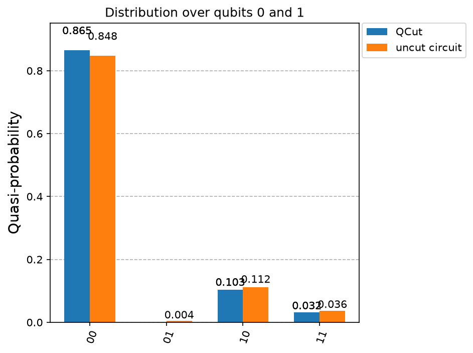

Basic Usage#
QCut is a quantum circuit knitting package capable of efficiently partitioning quantum circuits with wire and gate cuts using advanced LOCC and joint rotation decompositions along with the standard local decompositions. It is designed to be compatible with Qiskit and should be compatible with any Qiskit programmable backend but has been especially designed to be compatible with IQM’s qpus and the Finnish Quantum Computing Infrastructure (FiQCI).
QCut has been built at CSC - IT Center for Science (Finnish IT Center for Science)
Creating cut circuits and experiments#
1: Import needed packages
import numpy as np
import QCut as ck
from QCut import cut, cutGate, CutOptions, find_cuts
from qiskit import QuantumCircuit, transpile
from qiskit.circuit.library import CXGate
from qiskit.quantum_info import SparsePauliOp
from qiskit_aer import AerSimulator
from qiskit.primitives import StatevectorEstimator as Estimator, BackendEstimatorV2 as BackendEstimator
from iqm.qiskit_iqm import IQMFakeAdonis
2: Start by defining a QuantumCircuit just like in Qiskit
circuit = QuantumCircuit(5)
for qubit in range(5):
circuit.ry(0.4 + 0.3*qubit, qubit)
circuit.cx(0,1)
circuit.cx(1,2)
circuit.cx(2,3)
circuit.cx(3,4)
circuit.draw("mpl")

3: Insert cuts to the circuit to denote where we want to cut the circuit
Note that here we don’t insert any measurements. Measurements will be automatically handled by QCut.
marked_circuit = QuantumCircuit(5)
for qubit in range(5):
marked_circuit.ry(0.4 + 0.3*qubit, qubit)
marked_circuit.cx(0,1)
marked_circuit.append(**cutGate(CXGate(), 1, 2))
marked_circuit.cx(2,3)
marked_circuit.append(cut(), [3])
marked_circuit.cx(3,4)
marked_circuit.decompose(gates_to_decompose=["CutGate"]).draw("mpl")

cutGate() marks a gate cut and cut() a wire cut. Any two-qubit gate can
be cut, with the decomposition derived from the gate’s KAK coordinates, so the CX above
is a single cut rather than a CZ with fix-up gates around it. See
gate cuts and wire cuts for more on
placing them, and Theory for where the decompositions come from.
4. Extract cut locations from the marked circuit and split it into independent subcircuits.
cut_circuit = ck.get_locations_and_subcircuits(marked_circuit)
Now we can draw our subcircuits.
cut_circuit.subcircuits[0].draw("mpl")

cut_circuit.subcircuits[1].draw("mpl")

cut_circuit.subcircuits[2].draw("mpl")

5: Define observables and generate experiment circuits
Observables are defined using the SparsePauliOp class from Qiskit.
observables = SparsePauliOp(["IIIIZ", "IIIZI", "IIZII", "IIIZZ"])
cut_experiment = ck.get_experiment_circuits(cut_circuit, observables)
print(cut_experiment.num_groups)
48
get_experiment_circuits() does not modify the CutCircuit it is given, so
the same split can be reused for several observable sets. Both CutCircuit and
CutExperiment implement the assign_parameters() function of
Qiskit.QuantumCircuit.
Click here to download example notebook.
What a cut costs#
print(cut_circuit.gamma, cut_circuit.optimal_gamma)
12.0 9.0
gamma is the sampling overhead of this split and optimal_gamma the least
those same cuts could cost with every decomposition available. Shot cost goes as
gamma squared. Both are closed form, so a plan can be costed before any
experiment circuits are built, and CutExperiment carries both forward.
The gap here is the lone wire cut: on its own it does not communicate under the default
wire_cut_communication="auto", so it costs 4 rather than 3. Passing
"always" closes it and this split reaches 9.
Cheaper decompositions#
Cuts are not decomposed one at a time where a cheaper joint decomposition exists. All three of the below are on by default and can be turned off through Options.
default |
turned off |
|
|---|---|---|
A run of gates on one qubit pair costs a single cut |
1 cut, gamma 1.59, 6 subexperiments |
2 cuts, gamma 9, 36 |
Parallel single-axis rotations share one decomposition (derivation) |
gamma 5.50, 30 subexperiments |
gamma 6.77, 36 |
A block of parallel wire cuts exchanges its measured outcome (derivation) |
gamma 7, 28 subexperiments |
gamma 16, 64 |
A separate circuit, to show the last of those on its own. Two parallel wire cuts cost
2**(n+1) - 1 rather than 4**n:
pair = QuantumCircuit(4)
for qubit in range(4):
pair.ry(0.4 + 0.2 * qubit, qubit)
pair.cx(0, 1)
pair.cx(0, 2)
pair.append(cut(), [1])
pair.append(cut(), [2])
pair.cx(1, 2)
pair.cx(2, 3)
block = ck.get_locations_and_subcircuits(pair)
local = ck.get_locations_and_subcircuits(
pair, options=CutOptions(wire_cut_communication="never")
)
print(block.gamma, local.gamma, local.optimal_gamma)
7.0 16.0 7.0
Those cuts run in waves, since one side has to be measured before the other can prepare
what it measured. run_experiments() handles that itself.
Options#
CutOptions is collected once and carried through the run. It covers the three
decompositions above, the expansion strategy, sampling and the cut finder. Above 1000
groups the experiment is sampled from the quasiprobability distribution rather than
enumerated. Every option and its default is listed under Options.
Automatic cuts#
QCut comes with functionality for automatically finding good cut locations that can place both wire and gate cuts.
options = CutOptions(
finder_num_partitions=3,
finder_cut_mode="both",
)
found = find_cuts(circuit, options=options)
print(len(found.cut_locations), found.gamma)
2 9.0
Here the finder reaches the optimal_gamma the hand-placed cuts above did not. See
automatic cuts for the finder’s own options and how it
chooses.
Transpilation#
Two helpers, transpile_subcircuits() and transpile_circuits(), differing in when they run:
fake = IQMFakeAdonis() #noisy
sim = AerSimulator() #ideal
transpile_circuits() does whichever of the two the thing it is given calls for.
Each subcircuit once, before the experiment circuits are built:
transpiled = ck.transpile_circuits(cut_circuit, fake, optimization_level=3)
cut_experiment = ck.get_experiment_circuits(transpiled, observables)
Or every experiment circuit, afterwards:
cut_experiment = ck.transpile_circuits(
ck.get_experiment_circuits(cut_circuit, observables), fake, optimization_level=3
)
Given a cut circuit it is much the faster of the two, but the subcircuits still carry the
cut and observable placeholders, so the transpiler is working on a circuit it cannot see
all of. It therefore disallows remove_final_rzs and
optimize_single_qubits and raises if you pass them. Given an experiment there are
no placeholders left to, so it optimises further.
Plain circuits are transpiled as they are, which is what a backend handed circuits rather than an experiment needs. See Running on several backends.
On an IQM backend both use IQM’s own transpiler. Pass use_iqm_transpiler=False
for the ordinary Qiskit path. On a resonator device such as IQMFakeDeneb the MOVE
gates are routed in for you.
Execution#
results = ck.run_experiments(cut_experiment, backend=fake)
expectation_values = ck.estimate_expectation_values(results)
The cost of an experiment run can be checked before submission:
print(ck.estimate_run(cut_experiment, shots=4096, max_batch_size=40))
Experiment will run 144 circuits in 4 jobs with a total of 589824 shots. See the
returned object for the breakdown.
{'job1': JobEstimate(circuits=40, shots=4096),
'job2': JobEstimate(circuits=40, shots=4096), ...}
Exact for non-cummunicating runs. Runs whose wire cuts communicate get executed in waves so that each wave after the first spends its shots on what the one before it measured. For these jobs the circuit count is exact and job and shot counts are estimates.
backend takes a Qiskit backend, a V2 sampler, or anything else shaped like a
backend, which is what lets e.g. fiqci-ems run the experiment:
from fiqci.ems import FiQCISampler
results = ck.run_experiments(
cut_experiment, backend=FiQCISampler(backend, mitigation_level=1)
)
Every batch is submitted before any of it is collected, so a run queues all its jobs at
once. max_batch_size bounds how many circuits go in one, and a target that
batches on its own account is given that same size so it does not split a batch again.
run_options is passed on to every run call for anything else the target
takes.
Note that qiskit.primitives.StatevectorSampler cannot be used since circuits
from QCut contain mid-circuit measurements and that sampler refuses those.
qiskit_aer.primitives.SamplerV2 and BackendSamplerV2 are both fine.
Comparing against the exact and noisy expectation values of the original circuit:
obs = [ob.to_label() for ob in observables.paulis]
estimator = Estimator()
exact_expvals = [e.data.evs for e in
estimator.run([(x) for x in zip([circuit] * len(obs), obs)]).result()
]
tr = transpile(circuit, backend=fake)
tr_obs = observables.apply_layout(tr.layout)
tr_obs_separate = [
SparsePauliOp(pauli.to_label()) for pauli in tr_obs.paulis
]
fake_estimator = BackendEstimator(backend=fake)
exps = [e.data.evs for e in
fake_estimator.run([(x) for x in zip([tr] * len(tr_obs_separate), tr_obs_separate)]).result()
]
np.set_printoptions(formatter={"float": lambda x: f"{x:0.6f}"})
print(f"QCut expectation values:{np.array(expectation_values)}")
print(f"Noisy expectation values with fake backend:{np.array(exps)}")
print(f"Exact expectation values with ideal simulator :{np.array(exact_expvals)}")
QCut expectation values:[0.763209 0.602396 0.328544 0.575471]
Noisy expectation values with fake backend:[0.846680 0.564941 0.323242 0.593262]
Exact expectation values with ideal simulator :[0.921061 0.704466 0.380625 0.764842]
As we can see QCut is able to accurately reconstruct the expectation values and be more accurate that just using the fake backend as is. (Note that since this is a probabilistic method the results vary a bit each run)
Additionally we can execute QCut using the ideal Aer simulator and see that we get (practically) exact results:
QCut expectation values:[0.920158 0.706660 0.379018 0.778012]
Shorthand#
It is not necessary to go through each of the aforementioned steps individually.
run() takes a circuit with cuts marked in it and executes the whole sequence, and
run_cut_circuit() does the same for one that has already been split.
print(ck.run(marked_circuit, observables, sim, shots=2**12))
print(ck.run_cut_circuit(found, observables, sim))
[0.926887 0.699149 0.372935 0.765253]
[0.932540 0.717683 0.386038 0.775063]
Probability distributions#
A cut experiment estimates expectation values, so there are no counts to tally, but the
distribution over a chosen set of qubits can still be recovered from them. Pass
qubits instead of observables:
cut_experiment = ck.get_experiment_circuits(cut_circuit, qubits=[0, 1])
results = ck.run_experiments(cut_experiment, shots=4096, backend=sim)
probs = ck.estimate_probabilities(results)
{'00': 0.8658, '01': -0.0024, '10': 0.1041, '11': 0.0324}
run() and run_cut_circuit() take qubits in the same way, and hand
back the distribution rather than expectation values.
This costs 2**k values for k qubits but no extra circuits, since the Z
observables it needs all commute. See
the derivation.
The result is a dict, so it indexes and plots like one, and carries three views:
probs['00'] # 0.8658
probs.quasi_probabilities() # the same values, as a plain dict
probs.nearest_probabilities() # closest true distribution, negatives projected away
probs.counts() # scaled by the shots the experiment ran at
probs.counts(shots=1000) # or by any other shots
Against the same circuit run whole:
from qiskit.result import marginal_counts
from qiskit.visualization import plot_histogram
measured = circuit.measure_all(inplace=False)
counts = sim.run(transpile(measured, sim), shots=4096).result().get_counts()
plot_histogram(
[probs.counts(), marginal_counts(counts, [0, 1])], legend=["QCut", "uncut circuit"]
)

Running on FiQCI#
For running on real hardware through the Lumi supercomputer’s FiQCI partition follow the instructions here. If you are used to using Qiskit on jupyter notebooks it is recommended to use the Lumi web interface.
Running on other hardware#
Running on other providers such as IBM is untested at the moment but as long as the hardware can be accessed with Qiskit version > 1.0 QCut should be compatible.
Logging#
QCut reports what it decided at INFO, which nothing prints until logging is
configured:
import logging
logging.basicConfig(
level=logging.INFO,
format="%(asctime)s - %(name)s - %(levelname)s - %(message)s",
)
logging.getLogger("QCut").setLevel(logging.INFO)
logging.getLogger("qiskit").setLevel(logging.WARNING)
That covers the whole run: which partitions the finder costed and which it kept, whether consolidation was worth it, which cuts were bundled and the gamma that bought, any bundle the device could not take and what it fell back to, how many circuits went into each job and that job’s id, and how a communicating run split its shots between waves.
The job ids are the most important part. A job that fails or stalls on the device can be looked up by its id from the log.